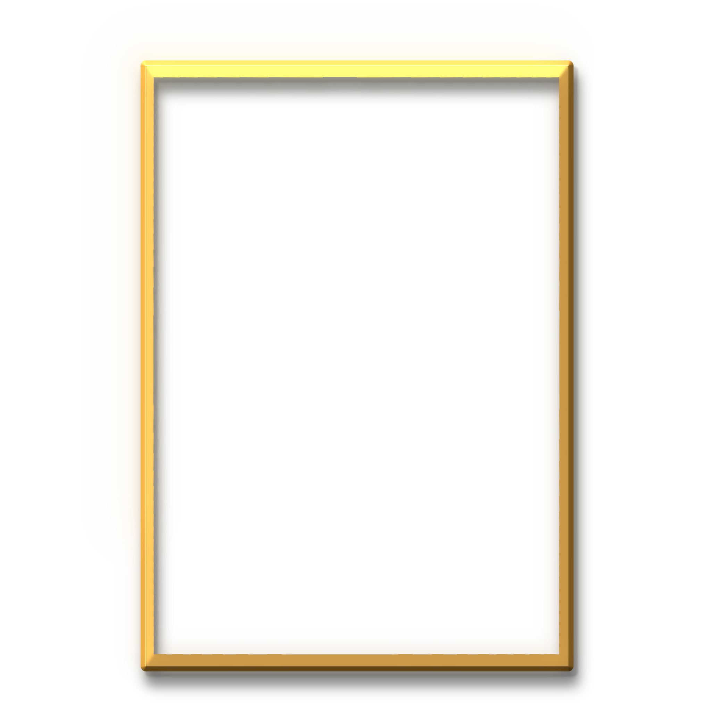

عقب رحيل شخصية سياسية ثقيلة إثر جراحة ناجحة،
تتحول أروقة الشفاء إلى مسرح لتصفية الحسابات بين تقارير
تحذف وشائعات تصنع للإعلام وتهم معدة مسبقاً. يجد جراح
بين جدران الخداع ويواجه عقوبة الإعدام لجريمة دولية.
